Signal-to-Signal Diffusion for Language
PIC2/thesisTL;DR
- Thesis goal: build diffusion models for language that do not fix the output length in advance. Discrete language diffusion is limited because every sample lives on a fixed lattice of token slots. The idea is to represent sequences as continuous-time vector signals, diffuse those signals, and then decode a sequence of any length.
- Key ingredient: continuous-time attention from the ∞-former. It turns a sequence of \(K\) hidden states into a smooth signal \(\bar X(t)\) on \(t\in[0,1]\), and lets each query read from that signal with a Gaussian density.
- Where we are: Phase 1 validates that backbone. On a synthetic classifier with a known Bayes-optimal ceiling, continuous attention matches discrete softmax to within about 1 point (0.860 vs 0.864 on the position-only task; ceiling 0.869), and with fixed \(N_b=32\) it is 6× faster at \(K=2048\).
- What is left: Phase 2 must make the encode/decode maps between tokens and signals solid (including length-free decoding). Phase 3 puts a diffusion process on the signal and validates it on small- to medium-scale seq2seq / language experiments.
1. Official thesis goal
Diffusion models were originally proposed for vision, but have recently been applied to discrete language data. A limitation of discrete diffusion models is that the length of the output sequence needs to be fixed beforehand and the positions of the generated tokens cannot change. This affects the quality of the generated text.
This thesis will develop diffusion models for language by leveraging continuous-time attention. By representing sequences as continuous-time vector-valued signals and using diffusion models to progressively refine those signals, we can transform sequence-to-sequence problems into signal-to-signal diffusion followed by generation of a sequence of arbitrary length. The thesis will contribute both at the theoretical level (a new model architecture) and through refined, validated small- to medium-scale experiments.
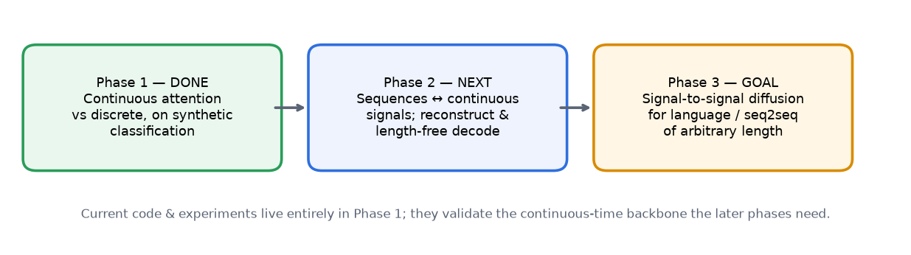
Phase 1 Continuous attention
Implement ∞-former-style continuous attention, compare it to discrete softmax on a synthetic task with a known Bayes ceiling, and measure accuracy, length generalisation, and cost.
Phase 2 Sequences ↔ signals
Turn a token sequence into a continuous signal and decode it back at any length \(K'\). Measure reconstruction quality and length-free sampling before any diffusion is added.
Phase 3 Signal diffusion
Run a continuous diffusion process on the signal (or on its basis coefficients), condition on an input signal for seq2seq, and decode an output of arbitrary length.
The rest of this page first covers the theory that motivates the goal (diffusion + continuous attention), then the proposed architecture, and finally the Phase 1 experiments already done.
2. Theory: diffusion models
Diffusion models learn to reverse a gradual noising process. They were introduced for continuous data such as images, and later adapted to discrete objects such as tokens. The thesis sits at the intersection of those two lines: it wants the modelling power of continuous diffusion, without accepting the fixed-lattice restriction of discrete language diffusion.
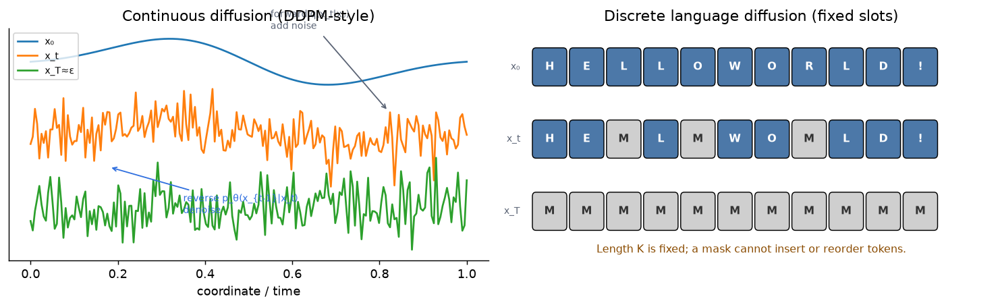
2.1 Continuous diffusion (DDPM)
In Denoising Diffusion Probabilistic Models (Ho et al., 2020), a clean sample \(x_0\) is gradually corrupted by Gaussian noise:
\[ q(x_t\mid x_0)=\mathcal N\big(x_t;\ \sqrt{\bar\alpha_t}\,x_0,\ (1-\bar\alpha_t)I\big). \]A neural network \(\epsilon_\theta(x_t,t)\) is trained to predict the noise that was added. Sampling starts from \(x_T\sim\mathcal N(0,I)\) and iteratively denoises. The same idea can be written as a continuous-time score-based SDE (Song et al.), where the network estimates \(\nabla_{x}\log p_t(x)\).
Why this matters for the thesis: continuous diffusion is defined on a vector space. Once a sequence is represented as a continuous-time signal \(\bar X(t)\in\mathbb R^d\), or as a finite coefficient matrix \(B\in\mathbb R^{N_b\times d}\), standard DDPM / score-matching machinery applies directly. There is no need to invent a new discrete corruption process for tokens.
2.2 Discrete diffusion for language
Recent large language diffusion models (e.g. LLaDA, Nie et al., 2025) keep the Transformer stack but replace left-to-right next-token prediction with iterative denoising over discrete states. Typical forward processes:
- Absorbing / masking: each token is replaced by a special
[MASK]with increasing probability. - Uniform / categorical: each token is resampled from the vocabulary.
The reverse model predicts clean tokens (or a denoised categorical distribution) at every position, often in parallel. This can match or beat autoregressive models on some benchmarks, but the representation itself stays discrete and grid-like.
2.3 The fixed-length bottleneck
Because the state is a length-\(K\) array of tokens:
- The output length must be chosen before generation (or handled by padding / EOS heuristics).
- Token positions are locked. The model cannot insert, delete, or shift content without a separate edit mechanism.
- Alignment with a source sequence of a different length is awkward for seq2seq, because source and target lattices need not match.
3. Theory: continuous attention
Continuous-time attention (Martins et al., 2020; ∞-former, Martins et al., 2022) is the tool that turns a discrete sequence into something a continuous diffusion model can act on. It replaces the finite set of positions \(\{1..K\}\) with the interval \([0,1]\). Position \(i\) is mapped to time \(t_i = i/K\). There are three ingredients.
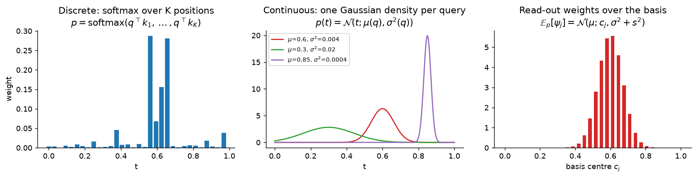
3.1 From \(K\) states to a continuous signal
Choose \(N_b\) Gaussian radial basis functions \(\psi_j(t)=\mathcal N(t;\,c_j,\,s^2)\), with centres \(c_j\) spaced evenly in \([0,1]\) and default width \(s=1/N_b\). The value vectors \(V\in\mathbb R^{K\times d}\) are approximated by a smooth signal
\[ \bar X(t) = B^\top \psi(t), \qquad B\in\mathbb R^{N_b\times d}. \]The coefficients \(B\) are found by ridge regression on the grid \(t_1,\dots,t_K\). Let \(F=[\psi(t_1),\dots,\psi(t_K)]\in\mathbb R^{N_b\times K}\). Then
\[ B = \arg\min_B \|F^\top B - V\|_F^2 + \lambda\|B\|_F^2 \;=\; \underbrace{(FF^\top+\lambda I)^{-1}F}_{G_K}\;V. \]\(G_K\) depends only on the length \(K\), not on the data. It is computed once in float64 and cached. Fitting is then the product \(B=G_KV\), costing \(O(KN_bd)\).
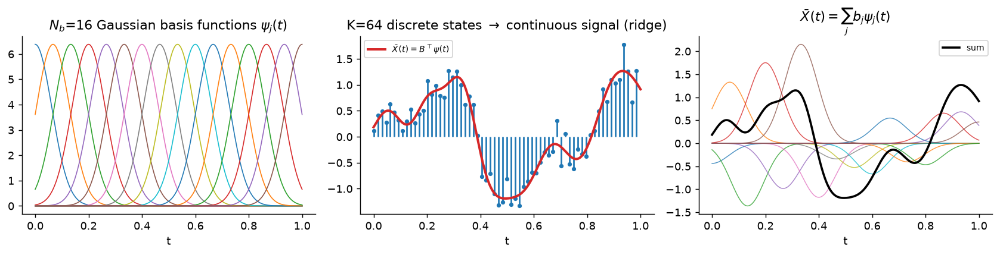
model/attn_continuous.py — ContinuousBasis
def G(self, K, device, dtype):
"""G_K = (F F^T + lambda I)^{-1} F, (N_b, K); depends only on K."""
t = time_grid(K, device=device, dtype=torch.float64)
Fm = self.psi(t).T # (N_b, K)
A = Fm @ Fm.T + self.ridge * torch.eye(self.n_basis, ...)
self._G_cache[key] = torch.linalg.solve(A, Fm).to(dtype)
def fit(self, X): # (Bsz, K, d) -> (Bsz, N_b, d)
return torch.einsum("nk,bkd->bnd", self.G(X.shape[1], X.device, X.dtype), X)3.2 Gaussian attention densities
Discrete attention picks a distribution over \(K\) points. Continuous attention picks a density over \([0,1]\). Softmax is the solution of an entropy-regularised maximisation over \(\Delta^K\); the continuous analogue with differential entropy yields \(p_i(t)\propto\exp f_i(t)\). A quadratic score \(f_i(t)=-(t-\mu_i)^2/(2\sigma_i^2)\) gives a Gaussian:
\[ \mu_i = \mathrm{sigmoid}(w_\mu^\top q_i + b_\mu)\in(0,1), \qquad \sigma_i^2=\mathrm{softplus}(w_\sigma^\top q_i + b_\sigma) > 0. \]3.3 The closed-form read-out
The context vector is the expected value of the signal under the density:
\[ z_i = \mathbb E_{p_i}[\bar X(t)] = B^\top\,\mathbb E_{p_i}[\psi(t)]. \]Because both \(p_i\) and \(\psi_j\) are Gaussians, the expectation is a convolution identity:
\[ \mathbb E_{t\sim\mathcal N(\mu,\sigma^2)}\big[\mathcal N(t;c_j,s^2)\big] = \mathcal N(\mu;\,c_j,\,\sigma^2+s^2). \]Attention reduces to \(N_b\) scalar weights per query and one matrix product with \(B\). No numerical integral. The test test_expected_psi_closed_form_matches_numerical_integration checks this against brute-force integration.
model/attn_continuous.py — ContinuousSelfAttention.forward
Bcoef = self.basis.fit(self.v(x[:, n_prefix:])) # values -> basis coefficients (Bsz, N_b, d)
Vh = Bcoef.view(Bsz, -1, H, dh).transpose(1, 2) # split heads (Bsz, H, N_b, dh)
q = self.q(x).view(Bsz, T, H, dh).transpose(1, 2)
mu, var = self.density_params(q) # sigmoid / softplus (Bsz, H, T)
w = self.basis.expected_psi(mu, var) # N(mu; c_j, var + s^2) (Bsz, H, T, N_b)
z = w @ Vh # read-out (Bsz, H, T, dh)3.4 Complexity
| Discrete | Continuous (fixed \(N_b\)) | Continuous (\(N_b\propto K\)) | |
|---|---|---|---|
| Scores / weights | \(O(K^2 d)\) | \(O(K N_b)\) | \(O(K^2)\) |
| Fit \(B=G_KV\) | – | \(O(K N_b d)\) | \(O(K^2 d)\) |
| Total per layer | \(O(K^2d)\) | \(O(KN_bd)\) — linear in \(K\) | \(O(K^2 d)\) |
Linear cost is exactly what a signal-based generative model wants: the latent size is \(N_b\times d\), independent of the eventual decode length \(K'\).
4. Proposal: signal-to-signal diffusion
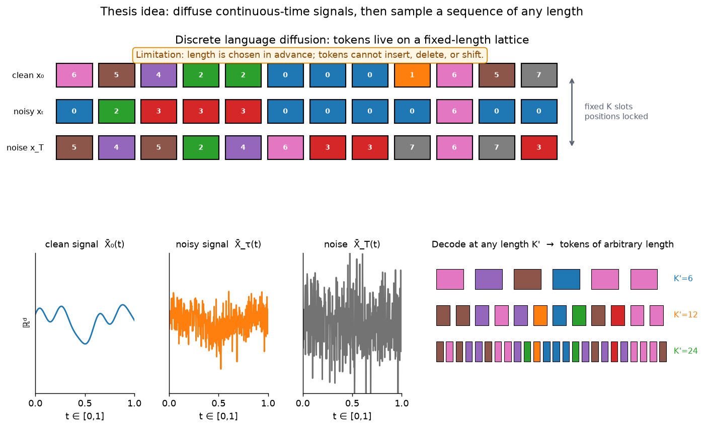
The architecture the thesis aims at has three stages:
→ signal \(\bar X(t)\) or coeffs \(B\)
via ContinuousBasis.fit
reverse with continuous-attn denoiser
DDPM / score matching
\(t_i=i/K'\), then to tokens
arbitrary length \(K'\)
Why this fixes the bottleneck
- The generative latent is a function on \([0,1]\), not a length-\(K\) array.
- Source and target can be encoded to signals of the same continuous domain, even if their token lengths differ.
- At decode time, choosing \(K'\) is like choosing a sampling rate. Insertions and deletions become changes of resolution / local speed, not edits on a lattice.
What still has to be designed
- What to diffuse: the coefficient matrix \(B\), the evaluated signal on a fine grid, or a latent of a further encoder.
- How to condition: cross-attend from the noisy target signal into a frozen source signal with continuous attention.
- How to decode tokens: a local classifier \(p(x\mid \bar X(t))\), a CTC / alignment head, or iterative refinement on the decoded lattice.
- Theory: consistency of the encode→diffuse→decode maps; whether the Gaussian-basis compression is information-preserving enough for generation.
5. Phase 1 so far: validating continuous attention
Phase 1 asks a narrow question: can continuous attention replace softmax in a Transformer classifier without losing accuracy, and is it cheaper at long lengths? The only module that changes between the two models is the attention block.
data/synthetic.pypositional.pyblocks.py, attn_*.pyclassifier.pytrain.pyAlso: discrete softmax attention, written as an expectation (click)
For one head, \(Q=XW_Q\), \(K=XW_K\), \(V=XW_V\), and
\[ p_i(j)=\mathrm{softmax}_j(q_i^\top k_j/\sqrt{d_h}),\qquad z_i=\mathbb E_{j\sim p_i}[v_j]. \]Softmax is the entropy-regularised maximiser over \(\Delta^K\). Cost is \(O(K^2d)\). The code is nanoGPT attention with the causal mask removed:
model/attn_discrete.py
q, k, v = self.c_attn(x).split(self.n_embd, dim=2)
q, k, v = (z.view(B, T, H, C // H).transpose(1, 2) for z in (q, k, v))
y = F.scaled_dot_product_attention(q, k, v, dropout_p=..., is_causal=False)5.1 The synthetic task
Real datasets make it hard to tell whether a model is limited by its architecture or by noise in the data. The generator is designed so that the optimal accuracy is known exactly, and so that the useful signal is positional and smooth — the regime continuous attention (and later signal diffusion) is built for.
Each class \(n\) has two token distributions \(Q_1^{(n)}, Q_2^{(n)}\) and a smooth mixing function \(f_n:[0,1]\to[0,1]\). Token \(i\) is sampled as
\[ P_n(x_i) = f_n(t_i)\,Q_1^{(n)}(x_i) + \big(1-f_n(t_i)\big)\,Q_2^{(n)}(x_i), \qquad t_i = i/K. \]Classes live on continuous time, so the same classes generate sequences of any length \(K\). That is what makes length generalisation — and later, length-free decoding — a well-posed experiment.
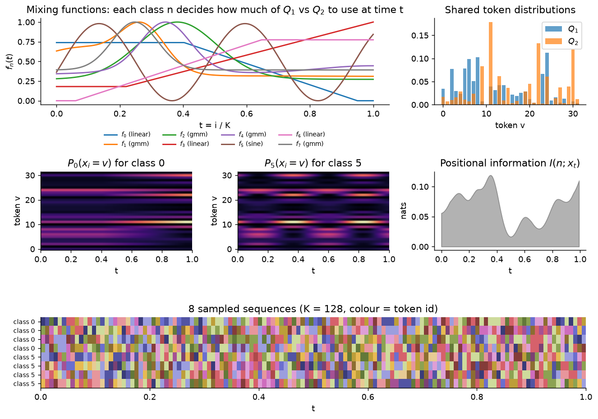
5.2 Bayes-optimal ceiling
Tokens are conditionally independent given the class, with a uniform prior, so the posterior is exact:
\[ \log P(n\mid x) = \sum_{i=1}^{K}\log P_n(x_i) - \log\sum_{n'}\exp\Big(\sum_i \log P_{n'}(x_i)\Big). \]Every experiment reports the gap to Bayes-optimal on identical evaluation sequences. The evaluator warns if a model beats Bayes by more than 4 SE (a bug check).

Positional information \(I(n;x_t)=\frac1N\sum_n\mathrm{KL}(P_n(\cdot\mid t)\,\|\,\bar P(\cdot\mid t))\) shows where classes differ; it is the grey shading in the diagnostic plots.
5.3 The position-only variant
On the easy config, unigram logistic regression already reaches 0.928 / 0.973. The position-only variant removes that shortcut: all classes share \((Q_1,Q_2)\), and each \(f_n\) is rescaled so \(\int_0^1 f_n=\tfrac12\). Unigram counts then carry zero information (unigram LR = chance = 0.125), while 8-bin logistic regression reaches 0.820. Beating 0.82 requires finer positional structure.
5.4 The model
A small nanoGPT-style encoder: 2 layers, 4 heads, \(d=128\), pre-LayerNorm, GELU MLP, non-causal, ~0.4M parameters.
Time encoding, not index encoding
\[ \mathrm{pos}(t) = W\,[\sin\omega_k t,\ \cos\omega_k t]_{k=1}^{16},\quad \omega_k\in[\pi, 32\pi]. \]Defined for every \(K\), and aligned with the data generator and the RBF basis. This is the same \(t\in[0,1]\) contract Phase 3 needs for length-free decode.
Prefix-aware continuous attention
With pooling=cls, a learnt [CLS] token may query the signal but is excluded from the fit (x[:, n_prefix:]). All layers share one ContinuousBasis, so \(G_K\) is computed once per length.
5.5 Training & evaluation protocol
- Infinite data. Fresh batches every step; AdamW, lr \(10^{-3}\), warm-up + cosine to \(10^{-4}\), batch 64, grad clip 1.0.
- Fixed eval sets. 4096 sequences per \(K\); models and Bayes scored on the same sequences.
- Cost. Forward+backward wall time; activation bytes via autograd saved-tensor hooks; peak CUDA memory when available.
- Budgets. Compare / length-gen: 8000 steps. \(K\)-sweep / ablations: 4000 steps. Single seed (0) so far.
6. Phase 1 results
6.1 Head-to-head at \(K=128\)

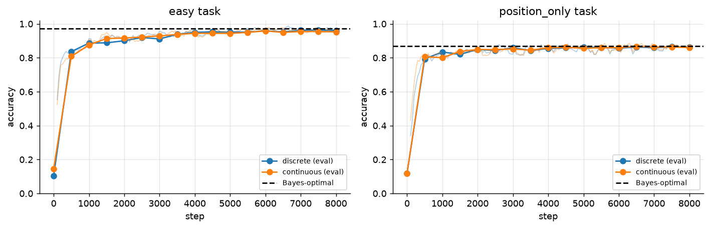
| Task | Bayes | Discrete | Continuous | Unigram LR | Binned LR |
|---|---|---|---|---|---|
| easy | 0.973 | 0.960 | 0.953 | 0.928 | 0.949 |
| position-only | 0.869 | 0.864 | 0.860 | 0.125 | 0.820 |
6.2 Where do the Gaussian heads look?
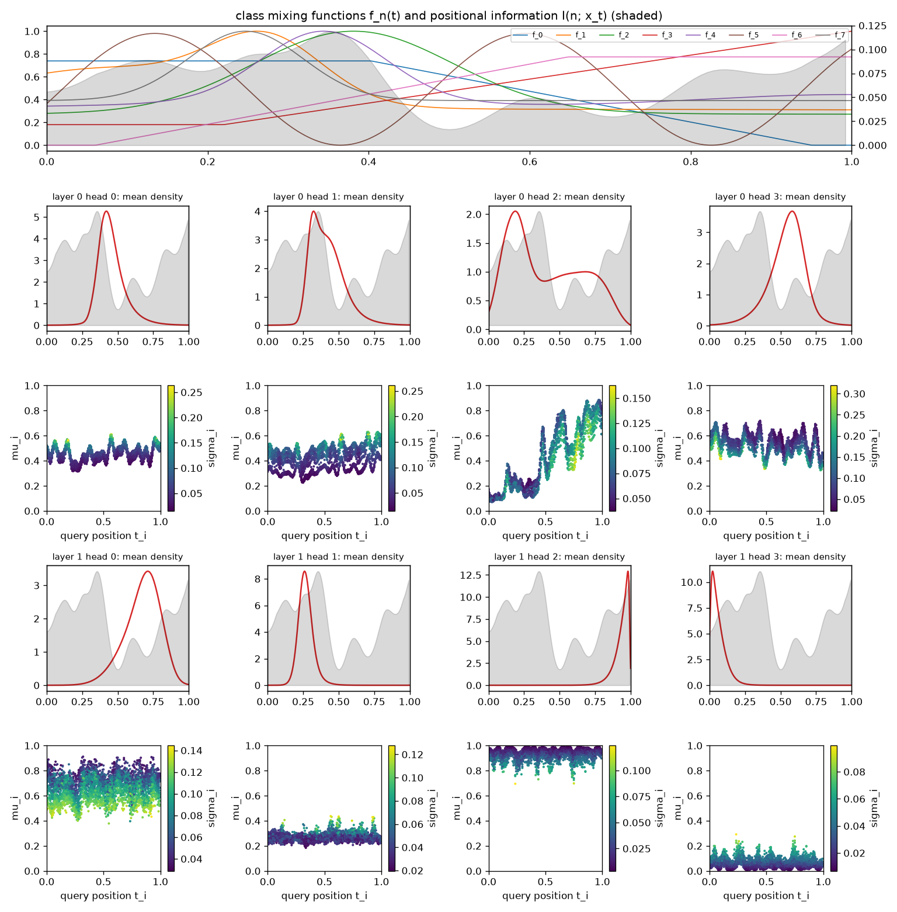
- Layer 0, head 2 learns a moving window (\(\mu_i\) rises with \(t_i\)): a local smoother over noisy tokens.
- Other heads become nearly query-independent and, in layer 1, very sharp. They pin fixed spots in time (\(t\approx 0.03, 0.27, 0.7, 0.95\)) and, with mean pooling, effectively sample the smoothed signal at a few landmarks.
Easy task: heads behave differently (click)
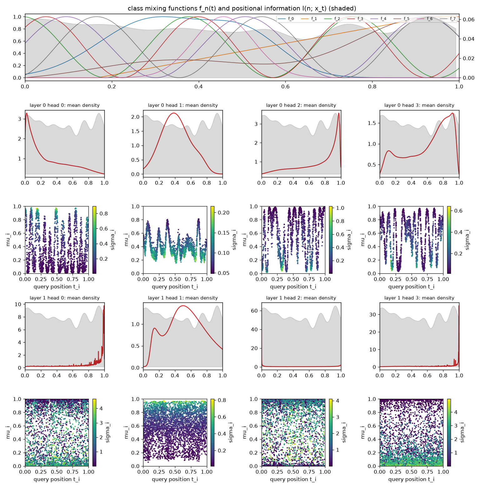
6.3 Length generalisation
Train at \(K=128\), evaluate elsewhere. Both models extrapolate to longer sequences. Continuous attention collapses on shorter ones (\(K=32\): 0.33 vs 0.51).


| eval \(K\) | 32 | 64 | 128 (train) | 256 | 512 | 1024 |
|---|---|---|---|---|---|---|
| Bayes (base) | 0.541 | 0.737 | 0.904 | 0.987 | 1.000 | 1.000 |
| Discrete | 0.507 | 0.707 | 0.884 | 0.982 | 0.999 | 1.000 |
| Continuous | 0.332 | 0.713 | 0.886 | 0.981 | 0.999 | 1.000 |
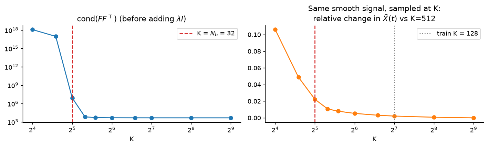
6.4 Accuracy and cost as \(K\) grows
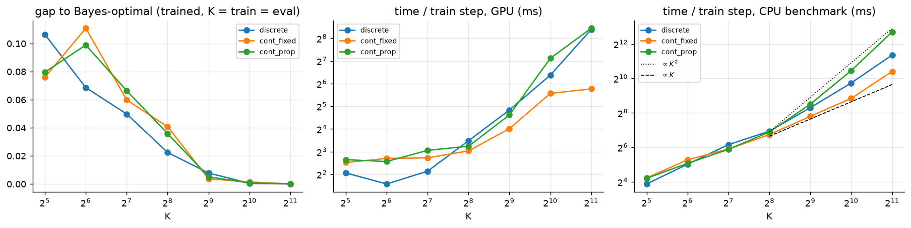
| \(K\) | Discrete GPU ms | cont_fixed GPU ms | Discrete CPU ms | cont_fixed CPU ms | Discrete peak CUDA MB | cont_fixed peak CUDA MB |
|---|---|---|---|---|---|---|
| 128 | 4.4 | 6.6 | 71 | 60 | 268 | 345 |
| 512 | 28.5 | 16.1 | 315 | 223 | 1197 | 1499 |
| 1024 | 83.0 | 47.4 | 852 | 458 | 2564 | 3164 |
| 2048 | 334.6 | 54.4 | 2618 | 1354 | 5797 | 6996 |
- Time: cont_fixed stays near-linear and is 6× faster on GPU at \(K=2048\).
- Memory: not better — about 20% higher peak CUDA; SDPA already avoids the \(K\times K\) matrix, while continuous materialises \((B,H,T,N_b)\).
- cont_prop: quadratic again, no accuracy gain.
- Accuracy: continuous trails by 1–4 gap points at mid \(K\) (single seed, 4000 steps). A fair sweep with
--constant_ceiling 0.9is still pending.
6.5 Ablations

- \(N_b\in[8,96]\), basis width, and ridge are all robust — good news for treating \(B\) as a compact latent.
- Heads are the sensitive knob: 1 continuous head loses ~1.7 points because a Gaussian is unimodal. Mixtures of Gaussians (or continuous sparsemax) are a natural Phase 2/3 upgrade.
- Mean pooling slightly beats [CLS].
7. Roadmap & open questions
Phase 1 Finish / harden
- 3+ seeds; report means ± SE.
sweep_K.py --constant_ceiling 0.9.- Confirm the \(K=N_b\) short-length failure (retry with \(N_b=16\)).
- Truncated-Gaussian read-out at the edges.
Phase 2 Encode / decode
- Sequence → \(B\) / \(\bar X(t)\) → sequence reconstruction loss.
- Decode at \(K'\neq K\); measure BLEU / exact-match / length error on synthetic strings.
- Decide the token head: local softmax, CTC-style, or iterative decode.
Phase 3 Signal-to-signal diffusion
- DDPM / score matching on \(B\) (or on a fine grid of \(\bar X\)).
- Conditional denoiser with continuous cross-attention to a source signal.
- Small- to medium-scale seq2seq / language experiments vs discrete diffusion and vs AR baselines.
- Theory: information preserved by the basis; consistency of arbitrary-length decode.
Architecture open points
- Unimodal heads → mixture densities or continuous sparsemax.
- Fuse continuous attention so memory claims become real.
- Whether to diffuse coefficients \(B\) (fixed dim) or the signal on a grid (resolution vs cost).
8. Code map & how to reproduce
| File | Role |
|---|---|
data/synthetic.py | Task generator, \(f_n\) families, Bayes posterior, positional information, baselines |
model/attn_discrete.py | Bidirectional softmax attention (SDPA) |
model/attn_continuous.py | RBF basis, cached \(G_K\), Gaussian densities, closed-form read-out — the Phase 3 backbone |
model/positional.py | Time grid \(t_i=i/K\) and sinusoidal time encoding |
model/blocks.py, classifier.py | Pre-LN blocks; pooling + classification head |
train.py | Config, training loop, Evaluator vs Bayes, cost benchmark |
experiments/*.py | compare, length_gen, sweep_K, ablations, diagnose |
tests/ | Closed form vs numerical integration, reconstruction, hard-attention limit |
explainer/ | This page + make_figures.py |
cd thesis
python experiments/compare.py --config configs/position_only.yaml
python experiments/length_gen.py --config configs/position_only.yaml
python experiments/sweep_K.py --steps 4000
python experiments/ablations.py --config configs/position_only.yaml --steps 4000
python experiments/diagnose.py runs/compare_position_only/continuous_s0
python explainer/make_figures.pyReferences
- L. Yang et al. Diffusion Models: A Comprehensive Survey of Methods and Applications. 2022. arXiv:2209.00796.
- J. Ho, A. Jain, P. Abbeel. Denoising Diffusion Probabilistic Models. NeurIPS 2020. arXiv:2006.11239.
- S. Nie et al. Large Language Diffusion Models (LLaDA). 2025. arXiv:2502.09992.
- P. H. Martins, Z. Marinho, A. F. T. Martins. ∞-former: Infinite Memory Transformer. ACL 2022. arXiv:2109.00301.
- A. Martins et al. Sparse and Continuous Attention Mechanisms. NeurIPS 2020.
- Y. Song et al. Score-Based Generative Modeling through Stochastic Differential Equations. ICLR 2021.
- A. Vaswani et al. Attention Is All You Need. NeurIPS 2017.
- A. Karpathy. nanoGPT (blocks).